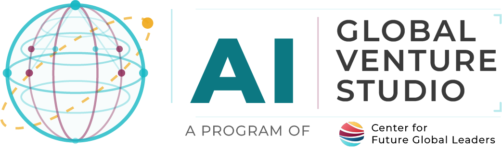

The program just wrapped — before the ideas and energy fade, we'd love five minutes of your honest feedback. It shapes what the next cohort looks like.
Share what worked, what was hard, and how AI Literacy Program felt from your side of the screen.
Tell us how registration, communication, and the program overall worked for your family.